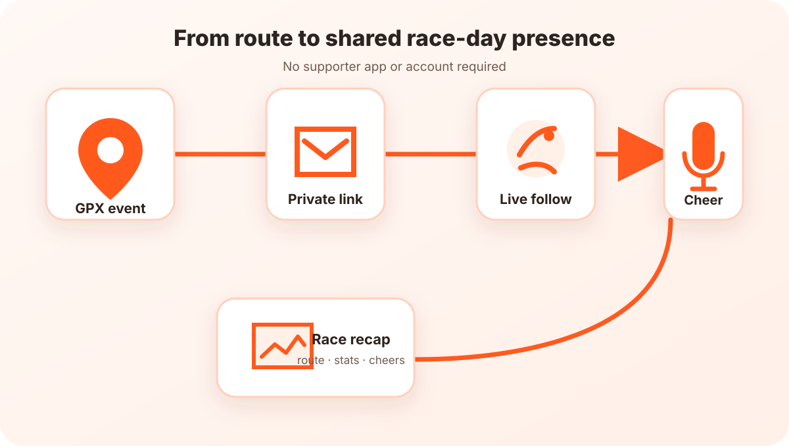

Cheerlify - Private Race-day Support
A private platform for any GPX route where friends follow a runner live and send voice or video cheers that play in the runner's headphones during the race.
Problem
Race tracking usually reduces a runner to a moving dot and is often tied to an official event or a specific ecosystem. Friends and family may know where the runner is, but they cannot turn that visibility into meaningful support at the difficult moment when it matters most.
Goal
Make remote supporters feel present on race day. A runner should be able to use any GPX route, invite only their own people, and hear real voices during the run. Supporters should need no app and no account: a private link, an access code, and a display name are enough.
Approach and features
A private event around any route
The runner creates an event from a GPX file and shares a protected race link and code. The mobile app records background location, while the browser dashboard projects live progress onto the route for invited followers.

Cheers delivered in context
Followers can record voice or video messages from the web. Cheers may trigger by route distance, time, or manual delivery and play through the runner's headphones, with audio handling designed for an active workout.
A memory after the finish
After the event, the product can turn the route, race statistics, and received cheers into a recap. This keeps the system centred on human moments rather than building another public fitness feed.
Architecture decisions
Cheerlify is a monorepo with an Expo React Native runner app, a Vite and React TypeScript follower experience, a Django REST backend, and a shared TypeScript domain package. API units are standardized at the domain boundary, and follower sessions stay anonymous by design. The deployed stack uses Docker Compose behind Cloudflare; event access is private, and payment capability is separated from the free tracking layer.
Engineering challenges
The product combines background GPS, real-time location delivery, route projection, private access, browser media capture, uploads, timed playback, background audio, and payments. Reliability matters more than novelty: a cheer delivered late or not at all misses its emotional purpose. Security work includes conservative production defaults, encrypted integration tokens, request throttling, and explicit payment fallbacks, while on-device long-run validation remains an important release gate.
Result and current state
Felix is the builder and engineer behind the end-to-end product. The current implementation covers live tracking, voice and video cheers, event packs and payments, invitation sharing, and recap foundations across mobile, web, and backend services. The system is online for controlled testing; real-run background validation and launch operations are the main open MVP work, so the portfolio describes the product as actively being built rather than claiming unverified adoption or performance metrics.
Project link
Product website: cheerlify.com. Protected by Cloudflare Access during controlled testing.